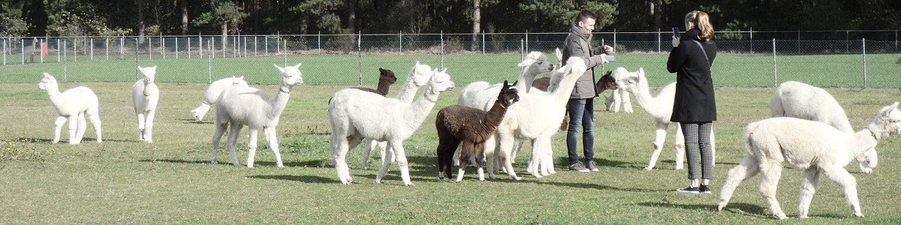

Welkom - Wie zijn wij
Enkele jaren geleden hebben wij, Natasha en Kevin, een alpacaboerderij opgericht om verwaarloosde alpaca's een goede thuis te geven. We zijn gestart met twee alpaca's en ondertussen vangen we permanent ongeveer 25 alpaca's op.
Alpaca's moeten jaarlijks een scheerbeurt ondergaan en ontdaan worden van hun vacht. Dat gebeurt in de maanden april, mei en juni, zodat de vacht weer voldoende tijd heeft om aan te groeien voor de winter. Het wol, gebruiken wij (deels) om diverse knuffels te maken voor kinderen die allergisch zijn van synthetische stoffen.
Daar de corona-pandemie heeft gezord voor een vermindering in de verkoop, en dus ook in de werkingsmiddelen van onze boerderij, hebben wij dit jaar onze productie van knuffels vergroot en stappen wij met deze webshop naar het brede publiek.
Wens jij ook een ecologische knuffel? Wil jij ons, en onze alpaca's, een hart onder de riem steken in deze moeilijke periode? Ga dan snel naar onze webshop!
Alvast bedankt,
Natasha en Kevin